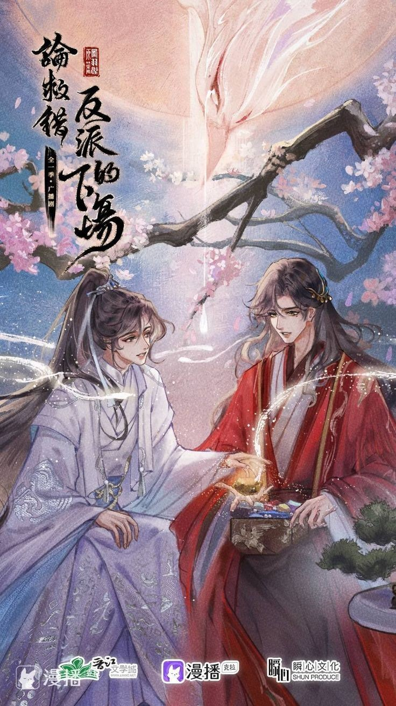

El profesor System ha encomendado una misión: rescatar al gentil, amable y trágico protagonista de la novela "El horno excepcional".
Song 'Scholar-Tyrant' Qingshi: “¡No se preocupe, profesor! ¡Definitivamente puedo asegurar la recuperación del paciente!”
En el Reino Inmortal:
Song Qingshi elogió desde el fondo de su corazón: "Mi paciente es el angelito más amable y hermoso del mundo".
Yue Wuhuan se lavó silenciosamente la sangre de las manos y sonrió suavemente: "En".
Song Qingshi juró desde el fondo de su corazón: "¡Como médico, nunca codiciaré ni me aprovecharé de mi hermosa paciente!"
Yue Wuhuan aprovechó al máximo al médico y sonrió suavemente: "En".
Song Qingshi afirmó desde el fondo de su corazón: "¡Bajo mi amoroso cuidado, el paciente nunca quedará ennegrecido!"
Yue Wuhuan ocultó en secreto sus pensamientos monstruosamente malvados y sonrió suavemente: "En".
En esa cumbre inextinguible, sobre miles y miles de lámparas de alma, él se sentó en el trono de hueso blanco del dios, custodiando ese trozo de piedra.
"Eres el único en este mundo que me trata con ternura".
"Y por eso, eres el único al que trato con ternura".
El erudito-tirano Song estaba absolutamente encantado: “¡Profesor! ¿Puedo obtener la máxima puntuación?
El profesor System explotó: “¡Tonto! ¡Salvaste a la persona equivocada!